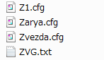
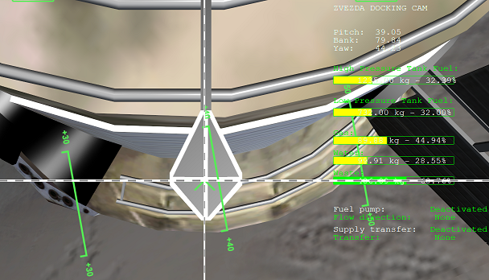
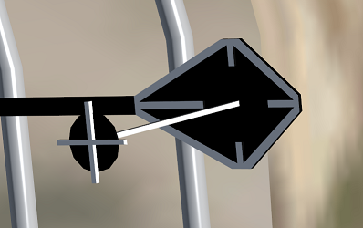

ISS v3.2 ズヴェズダの打ち上げとドッキング
打ち上げシナリオのバグ回避
プロトンロケットによるズヴェズダの打ち上げシナリオにはバグがあるため、そのままプレイするとエラーのためゲームが止まってしまいます。
以下のリンクからZVG.txtをダウンロード。
OHM International Space Station v.3.2 - Page 4 - Orbiter-Forum
このファイルをConfig\Vessels\ISSRフォルダに置いてください。

打ち上げに関する注意点
ズヴェズダを打ち上げてISSとランデブーする、というシンプルな内容ですが、ズヴェズダの宇宙船としての能力がかなり低いため、きわめて難しいミッションです。
おそらくスペースシャトルミッションのほうが難易度が低いので、詰まったら飛ばして先に進んでください。
まず、Perturbations（摂動）のオプションを無効にしてください。
Realism（リアリズム）とPerturbations（摂動）
摂動のオプションがオンになっていると誤差が生じますが、ズヴェズダにはこれを修正する余力がないので無効にしておきます。
以下の記事を参考に、打ち上げのタイミングを調整してください。
ISS v3.2 スペースシャトルの打ち上げ
ズヴェズダの打ち上げの場合、Tnは500秒前後が目安です。
軌道に上がったら、キーボードでCtrl+1、Ctrl+2、Eをそれぞれ押して、太陽電池パネルやエンジンカバーを展開してください。
ISSとのドッキング
ズヴェズダはRCS LINが使えないため、ズヴェズダを動かしてISSとドッキングするのはほぼ不可能です。
したがって、「ISSを動かしてズヴェズダとドッキングする」ことになります。
ズヴェズダでISSとのランデブーに成功したら、F3キーを押してISSに乗り換えます。
Cキーを押して、ZVEZDA DOCKING CAMに切り換えてください。

カメラが後ろ向きに、かつ斜めに取り付けられているので、Docking MFDは使えません。
RCSも前後が逆で軸が傾いた状態になっています。
ズヴェズダに取り付けられたドッキング用の目印を目視で確認して、これが正面に来るようにしてドッキングしてください。
